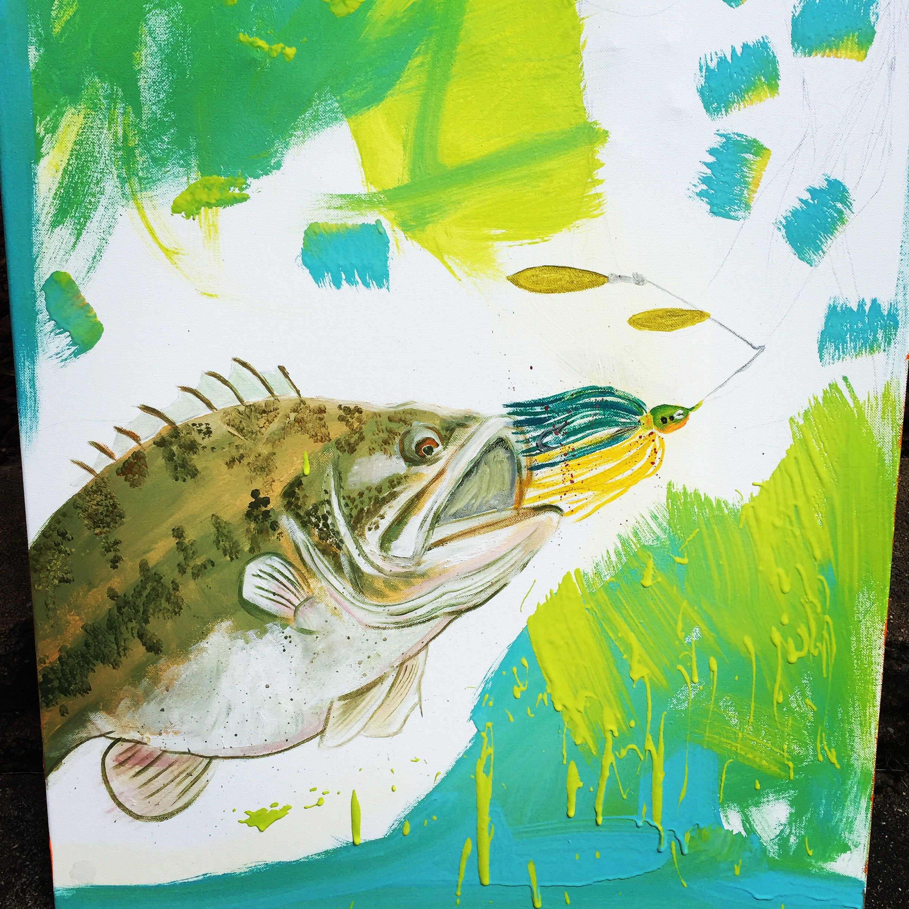
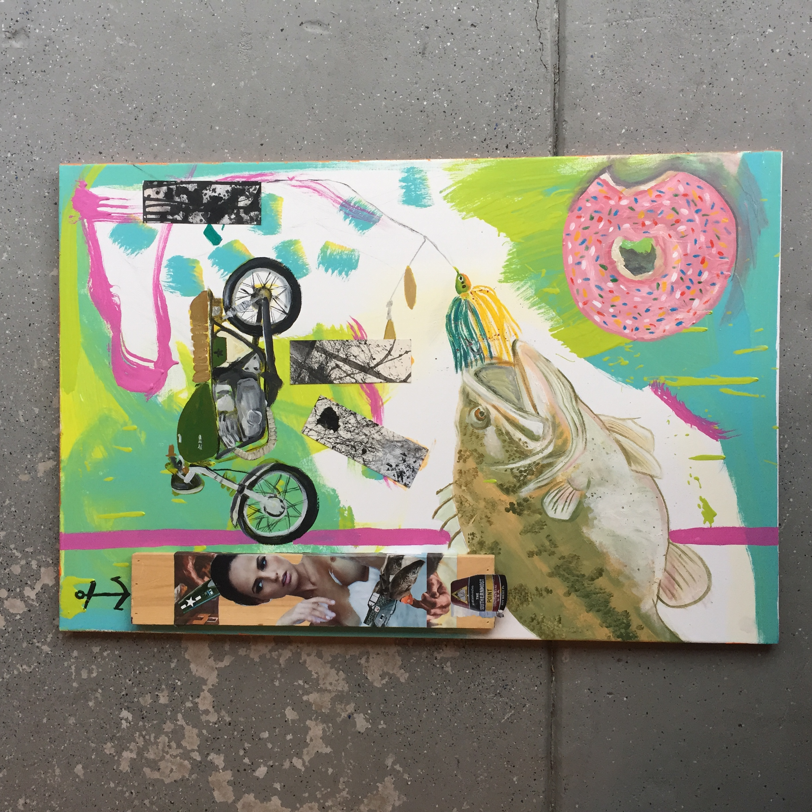
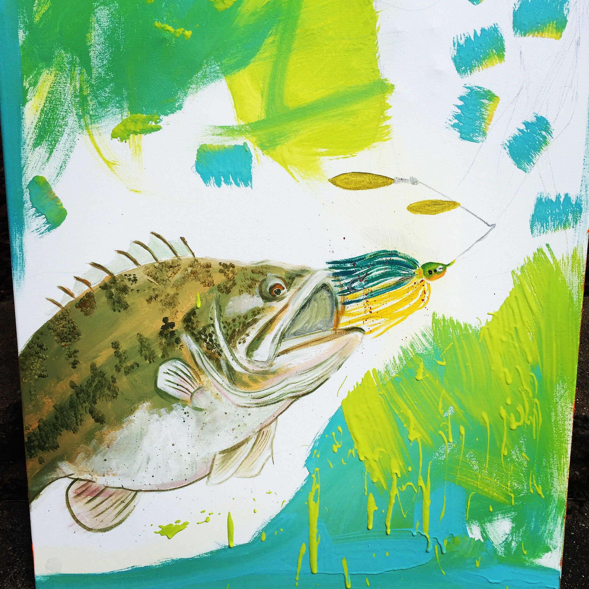
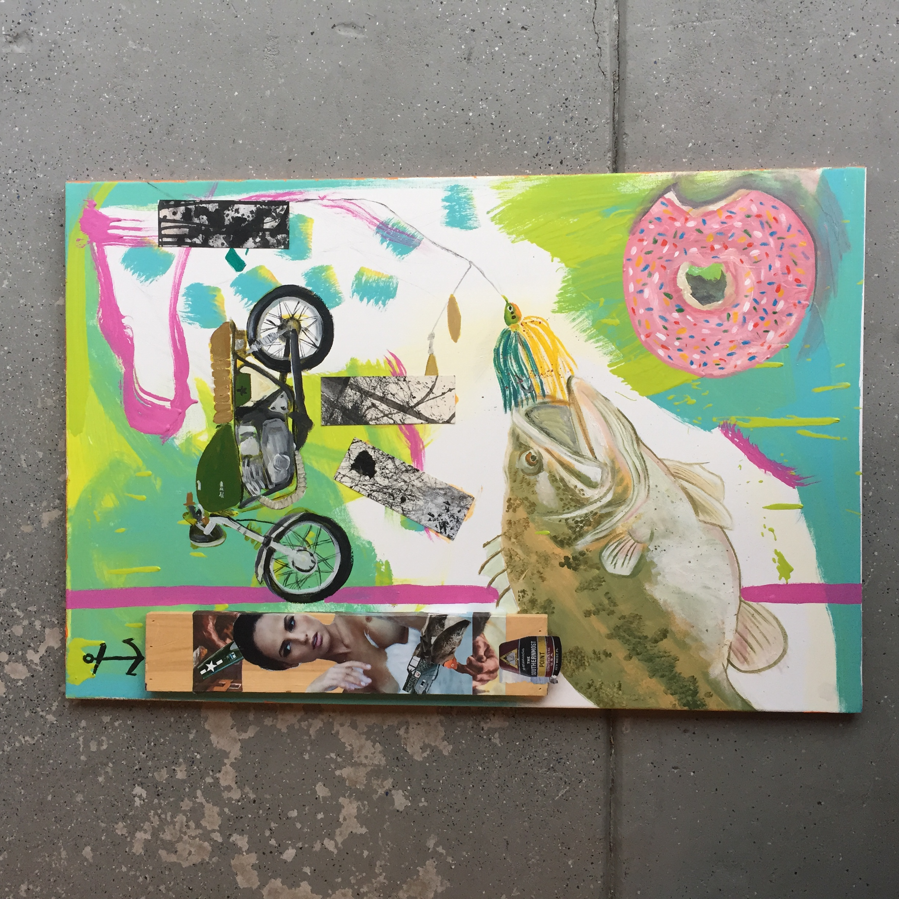
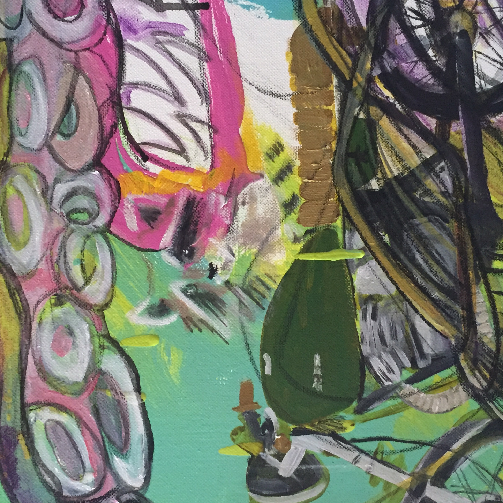
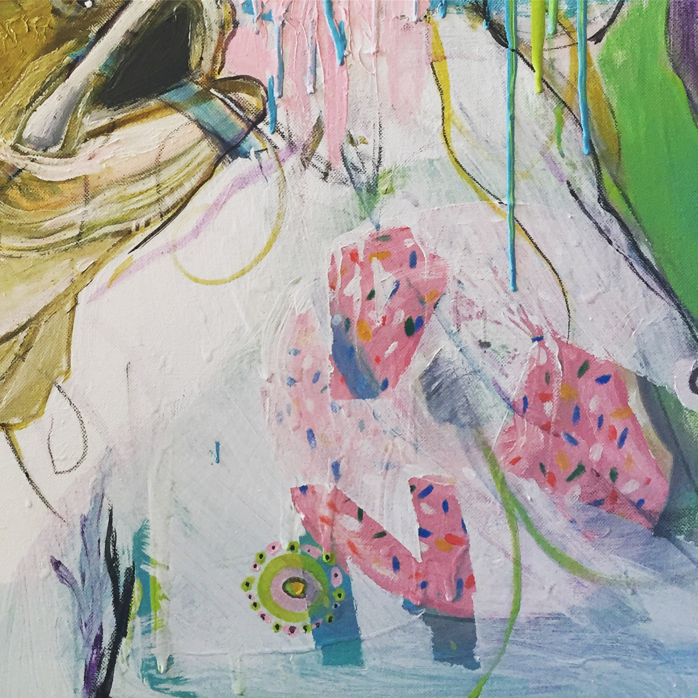
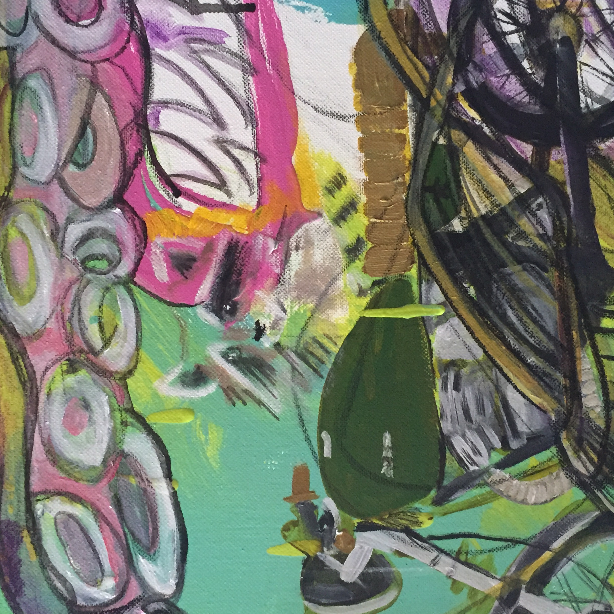
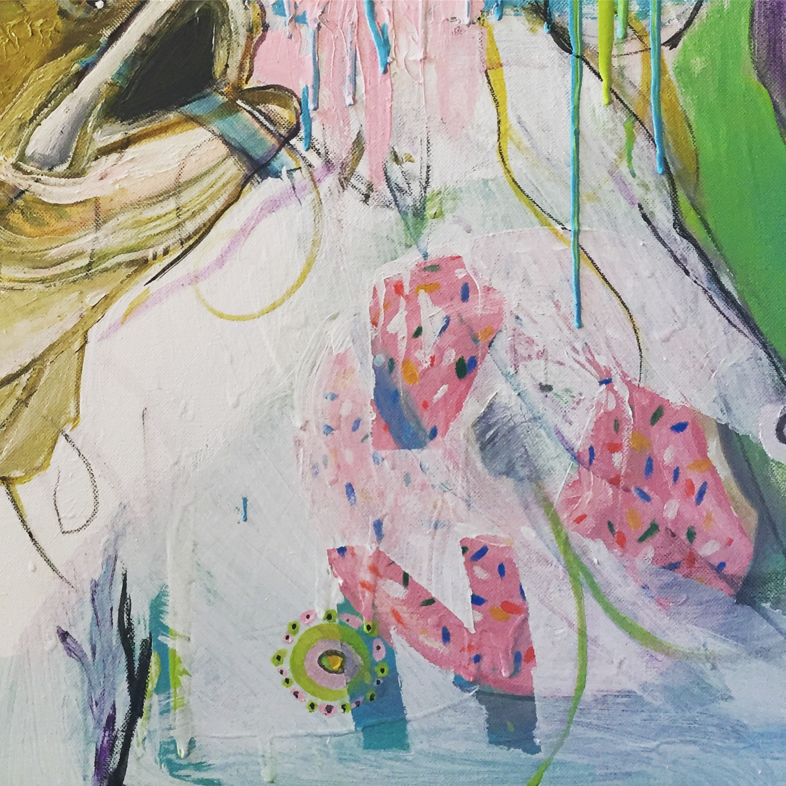

Rainer Agles Commissioned Painting
2020 | Virginia Beach.
Mixed Media Painting | Oil & Acrylic
Client Commission.
At the time I was doing a lot of collage work still. I had done some ink stuff on harder stock paper slash nicer paper. I really liked the way the medium was working with the heavier stock paper Academy in direct angles and was experimenting with geometric shapes for a while using the patterns that were produced with ink as kind of an accent to Two other pieces that I was working on. It wouldn't be me if I wasn't painting some type of animal too.
pI remember having this blank canvas and thinking do I want to wash it with a color do I want to start with it crazy bright scheme I really didn't know what I wanted to do. Thought about how cool it would be to have a bass of all things a bass fish ... I thought that would be pretty cool different but cool to throw on there as kind of the realistic animal element.
As I said before at the time I was heavy into collage and I would peruse National Geographic magazines, old animal studies, picture books ,70’s Playboy magazines, mechanical aircraft pictures, and just really anything that I thought was a juxtaposition to place together but with balance and Gestalt theory I could bring it all together.
Once the fish was on there and I was happy with the way that it looked I started adding color I wanted to stick with bright greens, Blues, pinks kind of that Miami vice color scheme. Then the fun part began, I started painting random things that I knew I could tie in together later: a piece of wood that I used magazine clippings & spray adhesive to make into its own little separate piece. The donut was just cool thing that I wanted to paint for a while…I added it on there. The client is a big fan of Cafe racer style motorcycles so I added one of those on there for him.
I knew I wanted to include a face that was kind of hidden and mysterious but I wanted to make it beautiful the picture above shows the idea of a hint of what was to come. I still was unsure how I was going to tie that in but I've made it work I think the hidden element that are in a lot of my pieces It was probably the most fun to throw in like the raccoon in the upper portion of the painting the random half painted dragon, the top of the fire hydrant that kind of tide in the models her to make it look as if it were in some type of bun or tide up.
Overall I was happy with the way that the face turned out and I was able to tie in little elements like a crude octopus tentacle and leave some blank space where it made sense.
The donut would live on and not be painted over. The whole piece when it was done looked like this. I was stoked on the way that it came out and it would continue to build My Portfolio and shape the way that I do work even today. I have a lot of fun doing Commission pieces. The tangible aspect of a painting rather than a print adds depth. You get to see the paint that’s thicker in places, the layers, the different elements of thought that went into making the piece.
My style contains a large amount of searching and unresolved lines that eventually lead into a Painting that makes sense …somehow through all the chaos it comes together and makes sense....to me at least. I like to paint things that I think would look interesting and when people view my work I want them to take the time to notice the little things. I love doing art for art’s sake. When we start letting go of that ideology that’s when we are in trouble and the creative mind has been put to sleep. Whatever you do that is creative do not be afraid to make something that people “might not like” your style is you. When I view other artists work I admire what I didn’t think of or cannot do. Art is truly a personal testimony to the world as you see it around you. Continue to create things you think are cool.
 




 


